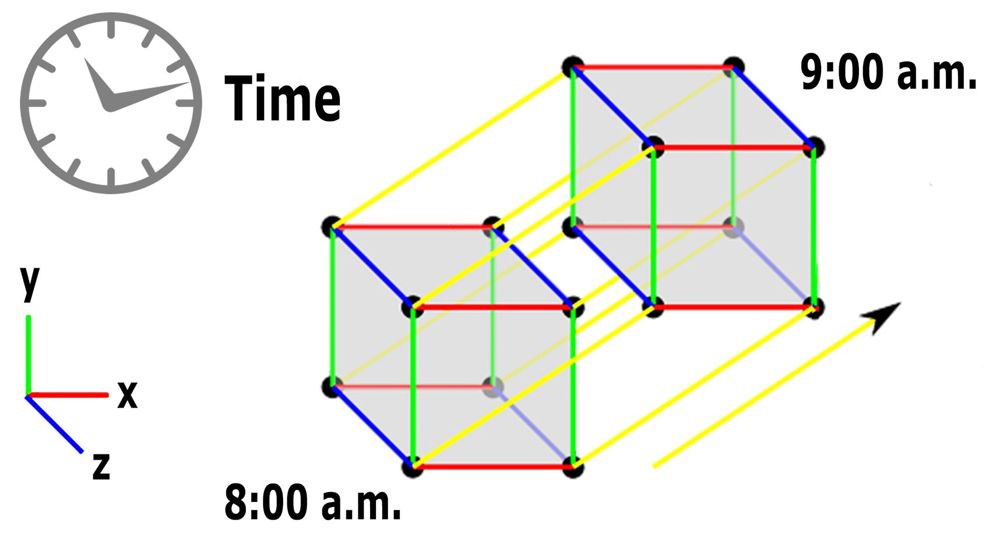
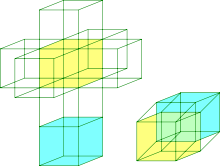

Welcome To Ultra Tertius Dimensio
Dimensions
In physics and mathematics, the dimension of a mathematical space (or object) is informally defined as the minimum number of coordinates required to specify any point in it. A line, therefore, has one dimension (1D). This is because only one coordinate is required to specify a point on a line (for example, the 5 points on a number line). A surface such as, for example, a cylinder or a sphere, has dimension 2 (2D). This is because specifying a point on it requires two coordinates. For example, locating a point on the surface of a ball requires both latitude and longitude. Two-dimensional Euclidean space is a two-dimensional space on a plane. The interior of a cube, cylinder, or sphere is three-dimensional (3D). This is because we need three coordinates to place a point in these spaces. In classical mechanics, space and time are separate categories and refer to absolute space and time.
Click on "This" to watch the basic concept of Dimensions.
Dimensions - Fourth
This worldview is a fourth-dimensional view, but not what we considered necessary to describe electromagnetism. Einstein’s fourth dimension (4D) of space-time consists of events not defined in space and time, but known about the movement of the observer. Minkowski space approximates the universe without gravity, while pseudo-Riemannian manifolds of general relativity describe space-time in terms of matter and gravity. 10 dimensions are used to describe superstring theory, 11 for supergravity and M-theory, and 10 for quantum mechanics. High-dimensional spaces are common in mathematics and science, such as Euclidean spaces or constitutive spaces like Lagrangian or Hamiltonian mechanics.
Four-Dimensional Space
Four-dimensional space (4D) is a mathematical extension of three-dimensional space (3D), which is the simplest abstraction of observation in that only three numbers are needed to describe the size or position of objects in our everyday world.
Ludwig Schläfli's concept of Euclidean space with any number of dimensions was fully developed before 1853. Charles Howard Hinton's essay ‘‘What is the Fourth Dimension?‘‘ in 1880 introduced the concept of the ‘‘four-dimensional cube‘‘. The simplest form of Hinton's method is to draw two regular 3D cubes in 2D space, one surrounding the other, separated by an ‘‘invisible‘‘ distance, and then draw lines between their equivalent vertices.
Dimenssional Spaces
Higher-dimensional spaces (greater than three) have become essential for modern mathematics and physics. Einstein's theory of relativity is formulated in 4D space, but not in Euclidean 4D space. Einstein's concept of spacetime has a Minkowski structure based on a non-Euclidean geometry with three spatial dimensions and one temporal dimension, rather than the four symmetric spatial dimensions of Schläfli's Euclidean 4D space. Individual locations in 4D Euclidean space can be specified as vectors or n-tuples, H. As an ordered list of numbers like (x, y, z, w). Only when such places are linked to more complex shapes does the full richness and geometric complexity of high-dimensional space emerge.
4D Tesseract a.k.a 4D Cube
Geomerty - 4th Dimension Explained
The geometry of four-dimensional space is much more complex than that of three-dimensional space due to the extra degree of freedom. In three dimensions, there are five regular polyhedra known as the Platonic solids. In four dimensions, there are 6 convex regular 4-polytopes, analogous to the Platonic solids. Relaxing the conditions for regularity generates 58 convex uniform 4-polytopes, analogous to the 13 semi-regular Archimedean solids in three dimensions. Relaxing the conditions for convexity generates 10 nonconvex regular 4-polytopes.In four dimensions, there are several different cylinder-like objects, such as a sphere, a cylinder, and a duo-cylinder. All three can "roll" in four-dimensional space, each with its own properties. Curves can form knots in three dimensions, but surfaces cannot. In four dimensions, knots made using curves can be untied by displacing them in the fourth direction. 2D surfaces can form non-trivial, non-self-intersecting knots in 4D space, making them much more complex than strings in 3D space.Examples include the Klein bottle and the real projective plane. Four-dimensional geometry is Euclidean geometry extended into one additional dimension. The prefix "hyper-" is usually used to refer to the four- (and higher-) dimensional analogs of three-dimensional objects, e.g., hypercube, hyperplane, hypersphere.

The Geomerty of the 4th Dimension and the Space - Time Continuum
Time
A temporal dimension, or time dimension, is a dimension of time that is one way to measure physical change. Time is often referred to as the "fourth dimension" for this reason, but that is not to imply that it is a spatial dimension. It is perceived differently from the three spatial dimensions in that there is only one of it, and that we cannot move freely in time but subjectively in one direction. The equations used in physics to model reality do not treat time in the same way that humans commonly perceive it. The best-known treatment of time as a dimension is Poincaré and Einstein's special relativity, which treats perceived space and time as components of a four-dimensional manifold, known as spacetime. Time is different from other spatial dimensions as it operates in all spatial dimensions, but is not present in a single point of absolute infinite singularity as defined as a geometric point. Just as when an object moves through positions in space, it also moves through positions in time, the force moving any object to change is time.

Geomerty Of 4th Dimension
Additional Dimensions
In physics, three dimensions of space and one of time is the accepted norm. However, there are theories that attempt to unify the four fundamental forces by introducing extra dimensions/hyperspace. Superstring theory requires 10 spacetime dimensions, and supergravity theory promotes 11D spacetime = 7D hyperspace + 4 common dimensions. To date, no direct experimental or observational evidence is available to support the existence of these extra dimensions. Kaluza–Klein theory presented 5D including an extra dimension of space in 1921, which unifies gravity with gauge interactions.
However, at sufficiently high energies or short distances, this setup still suffers from the same pathologies that obstruct direct attempts to describe quantum gravity. Superstring theory requires six compact dimensions (6D hyperspace) forming a Calabi–Yau manifold. Kaluza-Klein's theory is an incomplete description of string theory model building. D-branes are dynamically extended objects of various dimensionalities predicted by string theory that could play this role. They have the property that open string excitations, which are associated with gauge interactions, are confined to the brane by their endpoints, whereas the closed strings that mediate the gravitational interaction are free to propagate into the whole spacetime. This could be related to why gravity is weaker than the other forces, as it dilutes itself as it propagates into a higher-dimensional volume. Some aspects of brane physics have been applied to cosmology, such as brane gas cosmology, which attempts to explain why there are three dimensions of space using topological and thermodynamic considerations. Extra dimensions are said to be universal if all fields are equally free to propagate.
String Theory
What is the idea of String Theory?
The first is Albert Einstein's General Theory of Relativity, a theory that explains the structure of gravity and space-time on a macro-his level. One of the biggest problems in modern physics is that of quantum gravity. General relativity is formulated in the framework of classical physics, while other fundamental forces are described in the framework of quantum mechanics. In addition to the problem of developing a coherent theory of quantum gravity, there are many other fundamental problems in the physics of nuclei, black holes, and the early universe. The starting point of string theory is the idea that point-like particles in particle physics can also be modeled as one-dimensional objects, so-called strings. String theory explains how strings propagate through space and interact with each other. In one particular version of string theory, there is only one type of string, which looks like a small loop or segment of regular string and vibrates in different ways. At distance scales larger than the chordal scale, the string looks exactly like a normal particle, with its mass, charge, and other properties determined by the vibrational state of the string. In this way, all the different elementary particles can be seen as vibrating strings. In string theory, one of the string's vibrating states gives rise to a graviton, a quantum mechanical particle that carries gravity. String theory is therefore a theory of quantum gravity.
Moebius Strip
In mathematics, a Möbius strip is a surface that can be formed by connecting the edges of a piece of paper with a half-turn. It was discovered as a mathematical object by Johann Benedikt Listing and August Ferdinand Möbius in 1858, but it appears in Roman mosaics of the 3rd century. A Mobius strip is a surface that cannot be turned. This means that clockwise and counterclockwise rotations cannot be consistently distinguished. All surfaces that cannot be turned contain a Mobius strip.
The Grandfather - Paradox
In the grandfather paradox, if you were to travel back in time to kill your grandfather, then it would be impossible for your mother or father to be born. Hence you are not alive again since you don’t exist and couldn’t travel back in time. Therefore your grandfather is not dead, your parents are there, and you are back again to kill your grandfather. The way to solve this is to put this on a Möbius strip and write every event with the same distance. When you have done that, you can see that every opposite side they have an opposing event. This cycle repeats forever, and let's say you were born and not born at the same time, so you killed your grandfather in the first place so that you can live.